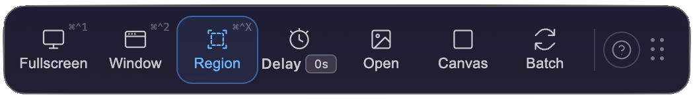

Welcome on Board
Scroll down through "Getting Started → Core → Advanced";
the left menu stays with you—click any section to jump.
Ctrl+F search works too.
Scroll down through "Getting Started → Core → Advanced";
tap the breathing light in the top right to jump to any section.
GETTING STARTED
Opening VAS for the first time
After downloading from the App Store and opening VAS, you'll see a fresh floating toolbar on your desktop. It stays where you place it—drag it freely.

If the toolbar takes up too much space and you want it smaller—the breathing light mode is off by default. Turn it on manually in the toolbar's "Keyboard Shortcuts".

VAS also lives in your macOS menu bar, shaped like a bottle in the top-right corner of your screen.

Click the bottle in the top-right menu bar (left-click) to summon or fully hide the desktop toolbar—we've thought of everything for desk minimalists.
VAS remains on standby in your menu bar.
Permissions & privacy
When VAS takes its first screenshot, macOS will request screen recording permission—this is required of all screenshot tools on macOS. If you declined, go to System Settings → Privacy & Security → Screen Recording, enable VAS, then reopen it.
Tauri onlyUpgrading from the Electron version? macOS treats Tauri as a brand-new app — your previous screen recording permission won't carry over. Go to System Settings → Privacy & Security → Screen Recording, remove the old VAS entry, then take a screenshot with the Tauri version. macOS will prompt you to grant permission again.
Every screenshot, every OCR-recognized word, every QR code—processed entirely on your machine. Nothing uploaded, analyzed, or learned from. VAS has no server.
Taking your first screenshot
Press the VAS icon in the Dock or click the bottle in your menu bar—wherever VAS is, it appears before you, toolbar fully extended.
Choose a screenshot mode (full screen ⌘^1, window ⌘^2, rectangle ⌘^X), frame what you need—VAS brings it into the editor so you can continue weaving what words alone cannot hold.
Done editing? Drag it out to any window or document.
Three seconds. That's all.
CORE
One breathing light. One keystroke away.
When you're not using VAS but want it small and ready, turn on breathing light mode.
The toolbar collapses into a single 120×6px glimmer. Quiet. Unobtrusive. Waiting.
When you need it:
- AllDrag an image near—the toolbar opens like a Venus flytrap, catches what you're dragging. Release, and the image goes straight into the editor. If you were editing something else, it tucks that away and continues.
- Tauri onlyDrag an image out—the editor collapses like a black hole, freeing your full desktop and view to save or hand off. One-click drag to any window / dialog / folder. Release, and the editor unfolds to continue.
- Tauri onlyCopy a URL nearby—the light unfolds, toast appears: "Found ⟨URL⟩—click to capture." One click. Screenshot begins.
- Tauri onlyCopy an image from your browser—toast asks "paste image?" You confirm. Straight to the editor.
If you tuck VAS into a corner of your desktop and forget where it is—we know the breathing light is genuinely subtle—
Click the VAS icon in your Dock. Wherever it is, it unfolds into the toolbar, waiting for you.
Capture Toolbar
The floating toolbar that lives on your desktop
Editor Interface
The second main space after a screenshot. The editor is divided into four operational zones:

Twenty-four tools — click any to see usage and attributes.
Select
Draw
Annotate
Privacy & Masking
Canvas
Layout
Other
Export
When you're done editing, VAS gives you four exits:
- Drag out—pull the image straight from the editor to your desktop, Finder, Slack, anywhere that accepts images. No saving, no dialogs. Drag and it's gone.
- Copy to clipboard—press the Copy button, the image goes to your clipboard, then ⌘V it anywhere.
- Tauri onlyShareSheet—macOS native share panel. AirDrop, Messages, Mail, social media.
- Save—JPG / PNG / WebP / GIF / BMP / TIFF / PDF.
ADVANCED
Recipes
VAS keeps each tool small. One job each — but properties stack.
- Text × Fill → Highlighter
- Text × Transparent + Outline → Transparent text
- Border × Dashed + Weight → Review marker
- Line × Right-angle + Dashed → Flow connector
- Shape × Gradient + Low opacity → Fade mask
- Bubble × Mosaic → Comic-style meme
The combinations you invent are your own vocabulary.
→ Your Inside Language with VAS
OCR & QR Code
A screenshot doesn't always mean you're editing.
OCR · Text recognition
Recognized text goes straight to your clipboard by default. After the screenshot, ⌘V and paste anywhere.
Tauri onlyFor supported language markets, OCR applies localized privacy masking—
It recognizes local ID numbers, credit card numbers, and phone formats, applying appropriate handling during recognition.
QR Code · Scan
VAS decides what to do based on how much of the QR Code your frame contains:
- Fully framed—treated as intentional scanning. Opens the link directly.
- Loosely framed (partial)—asks you first: "Open this link?"
- Background element—no action. Screenshot goes straight to the editor.
Keyboard shortcuts
Built-in editor shortcuts, organized in four groups:
Tool switching
| 選取工具 | V |
| 框型選取 | M |
| 筆型工具 | P |
| 線條工具 | L |
| 矩形框 | R |
| 色塊 | B |
| 文字工具 | T |
| 編號標記 | N |
| 符號印章 | U |
| 馬賽克／模糊 | X |
| OCR 文字辨識 | G |
| 隱私遮蔽 | K |
| 裁切 | C |
| 調整大小 | S |
| 延伸畫布 | E |
| 疊入圖片 | O |
Canvas
| 放大 | ⌘ = |
| 縮小 | ⌘ - |
| 適合視窗 | ⌘ 0 |
| 平移畫布 | Space ＋ 拖曳 |
| 切換磁吸對齊 | \ |
Edit
| 撤銷 | ⌘ Z |
| 重做 | ⌘ ⇧ Z |
| 複製 | ⌘ C |
| 貼上 | ⌘ V |
| 複製最終影像 | ⌘ ⇧ C |
| 全選 | ⌘ A |
| 刪除選取物件 | Delete / ⌫ |
Object
| 15° 鎖定旋轉 | Shift ＋ 旋轉 |
| 等比縮放 | Shift ＋ 拖曳角落 |
| 跳過磁吸 | Alt ＋ 拖曳 |
| 微調 1 px | ← → ↑ ↓ |
| 微調 10 px | Shift ＋ ← → ↑ ↓ |
| 結束折線繪製 | Double-click |
Custom settings
VAS intentionally offers few settings because we believe good tools get defaults right. What you can adjust:
- Show / hide desktop toolbar—left-click the bottle in the menu bar.
- Breathing light toggle—off by default. Enable it manually via "Keyboard Shortcuts" in the toolbar.
- Tauri onlyCustom keyboard shortcuts—the paid version lets you remap full-screen capture, window capture, rectangle capture, and paste image to whatever combinations feel native to you.
Key acceptance rules
| F1 … F12 | F keys (no modifier needed) |
| ⇧F5、⌘⌃A | Combinations with modifiers |
| A、1、X | Bare letters or numbers |
| ⌘Q、⌘W、⌘H、⌘, | System-reserved shortcuts |
| 單獨 ⌘ / ⌃ / ⌥ | Modifier keys alone |